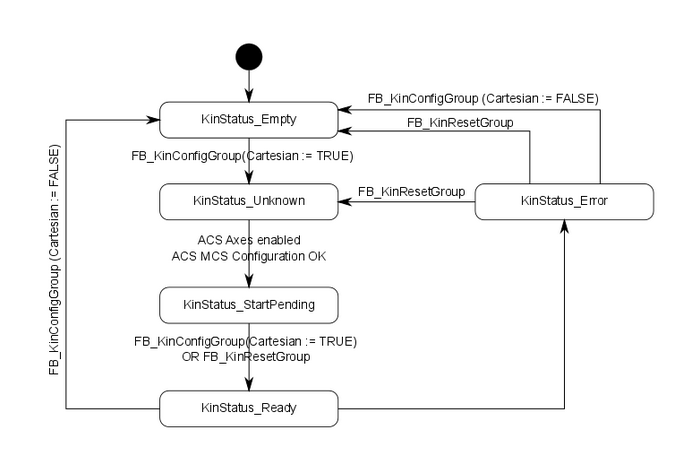
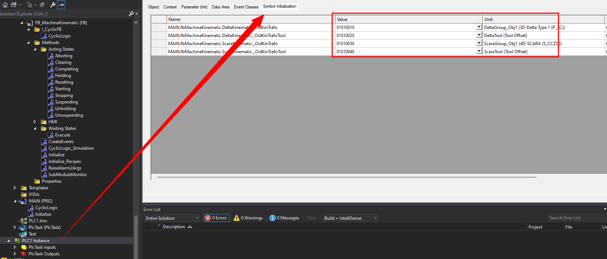
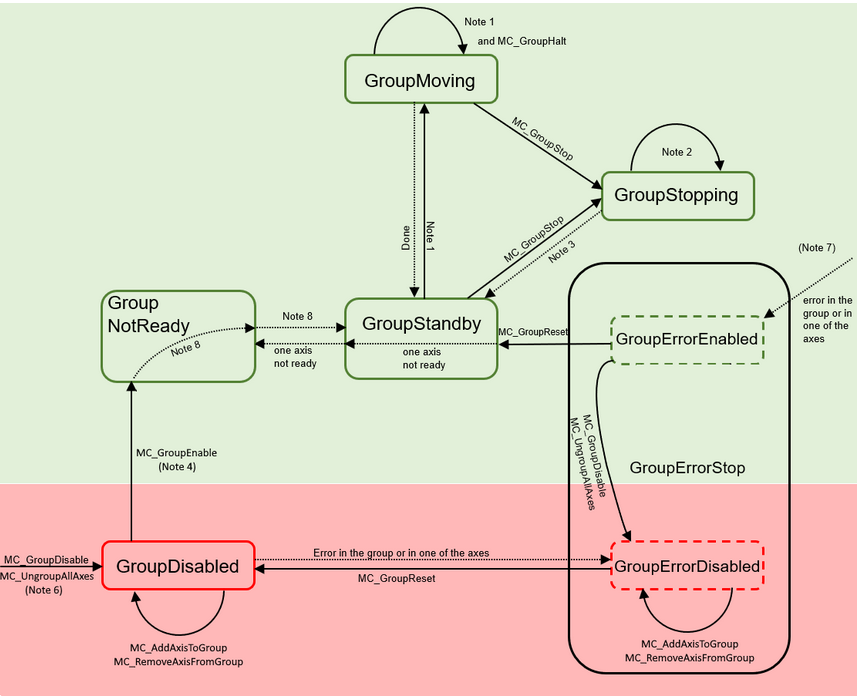

Function Blocks
FB_KinematicAxisRef
(implements I_KinematicAxisRef)
Serves as basis to connect Kinematic to all ACS and MCS Axis.
The FB is prepared to DOF=6.
Configured DOF needs to be set in Property DegreesOfFreedomConfigured. Default is DOF=6.
This FB decouples the ACS and MCS Axis from the Kinematic. This way it is possible ot interchange the Kinematic Transformation Objects without PLC Restart.
FB_KinematicGroup
(extends FB_ComponentBase, implements I_KinematicGroup)
Serves as manager for all Kinematic Group functions. Requires to be linked to desired kinematic transformation object via NCTOPLC_NCICHANNEL_REF and PLCTONC_NCICHANNEL_REF.
Info
Kinematic State Diagram applies for this Functionblock. 
Properties
| Property | Type | Access | Description |
|---|---|---|---|
| KinematicAxisIds | ST_KinAxes | R/W | Get/Set Kinematic Axis Ids corresponding ot ACS and MCS Axis Objects |
| KinematicStatus | E_KinStatus | R | Get the current Kinematic Object Status |
| KinMetaInfo | U_KinMetaInfo | R/W | Get/Set the current Kinematic Object Configuration for Forward Transformation |
| iAxisRef | I_KinematicAxisRef | R/W | Sets ACS and MCS Axes to Base Object from FB_KinematicAxisRef |
Info
You select the OID from the Kinematic in “Symbol Initialization” of the PLC instance. 
Methods
| Method | Return Type | Access | Description |
|---|---|---|---|
| BuildKinGroup | BOOL | Public | Returns TRUE Command was accepted |
| DissolveKinGroup | BOOL | Public | Returns TRUE Command was accepted |
| ResetKinGroup | BOOL | Public | Returns TRUE Command was accepted |
| CalcKinPosition | BOOL | Protected | Returns TRUE Command was accepted |
| SetKinematicParameter | BOOL | Public | Returns TRUE Command was accepted, Sets Parameter for Kinematic Object via OID and PID for Tool and Kinematic |
| PresetRotationExtRotationRange | BOOL | The function block FB_KinPresetRotation sets the rotational state. The rotational state is not persistent and must be reset after a TwinCAT restart or if a path is started after an ACS axis movement (direct mode) | |
| ActivateExtRotationRange | BOOL | Returns TRUE Command was accepted. Extends the rotation of the Kinematic Object to full circle. |
|
| DeactivateExtRotationRange | BOOL | Returns TRUE Command was accepted. Resets rotation behavior back to default. |
BuildKinGroup()
METHOD PUBLIC BuildKinGroup : BOOL
Executes the build of the Kinematic object. ACS and MCS Axis Ids from KinematicAxisIds are applied to the kinematic object selected.
Target State is Cartesian mode. E_KinStatus.KinStatus_Ready
DissolveKinGroup()
METHOD PUBLIC DissolveKinGroup : BOOL
If Kinematic Group is built, by executing this command, the Kinematic connection will be dissolved. ACS Axis will be standalone.
Target State is Joint mode. E_KinStatus.KinStatus_Empty
ResetKinGroup()
METHOD PUBLIC ResetKinGroup : BOOL
Reset Kinematic Group in case of E_KinStatus.KinStatus_Error.
This function can also be used to transfer the Kinematic from E_KinStatus.KinStatus_Pending to E_KinStatus.KinStatus_Ready in case the Kinematic was not enabled at Build.
CalcKinPosition()
1 2 3 4 5 6 7 | |
Calculates 4 times per second the MCS positions based on the configured Kinematic transformation, the current ACS positions and KinMetaInfo.
Warning
To receive correct forward transformation positions KinMetaInfo applies for Scara and 5D Type Robots.
SetKinematicParameter()
1 2 3 4 5 6 7 8 | |
Set individual Kinematic or Tool Parameter via the OID and PTCID in the Kinematic Object. The PTCID can be found in the Parameter View of your Kinematic Object.
Example
1 2 3 4 5 6 7 8 9 10 11 12 13 14 15 16 17 18 19 20 | |
PresetRotationExtRotationRange()
1 2 3 4 | |
Information to extended Rotation Range to find here.
ActivateExtRotationRange()
METHOD ActivateExtRotationRange : BOOL
Activates FB_KinExtendedRotationRange. It is required to set Rotation with PresetRotationExtRotationRange() before calling this Method.
Information to extended Rotation Range to find here.
DeactivateExtRotationRange()
METHOD DeactivateExtRotationRange : BOOL
Deactivates extended rotation back to default of your Kinematic.
FB_ComponentKinematicBase
(extends FB_KinematicGroup, implements I_Kinematic)
Serves as Functionblock for basic Robotic functions such as moving Joint Axis and Cartesian Axis. This FB also manages the correct implementation of the Kinematic Boot-up and Enabling sequence.
Errors are indicated by the AdsError
Properties
| Property | Type | Access | Description |
|---|---|---|---|
| ActPosition | ST_KinematicPosition | R | Returns current position of ACS and MCS Drives |
| Enabled | BOOL | R | Returns True if the Robotic System is enabled |
| InPosition | BOOL | R | Returns True if the Robotic System is at Target Position with all its Axis |
| Moving | BOOL | R | Returns True if one or more Axis is moving. Limits are set in the NC Axis Object |
| Override | LREAL | W | Set Override for Robotic System |
| TargetMotionParameter | ST_KinematicMotionParameter | R/W | Get/Set the motion Parameter of ACS and MCS Axis (Acceleration, Deceleration, Jerk, Position) |
| iAxisRef | I_KinematicAxisRef | W | Set interface to Axis Reference Object. Direct access to ACS and MCS axis configured in Motion |
Methods
| Method | Return Type | Access | Description |
|---|---|---|---|
| Disable | BOOL | Returns TRUE Command was accepted, Disables the Robotic System MC_Power |
|
| Enable | BOOL | Returns TRUE Command was accepted, Enables the Robotic System ACS and MCS Axes MC_Power |
|
| JogCartesianAxis | BOOL | Returns TRUE Command was accepted, Jogs one Cartesian Axis |
|
| JogJoint | BOOL | Returns TRUE Command was accepted, Jogs one Joint Axis |
|
| Stop | BOOL | Returns TRUE Command was accepted, Stops all movement of the Robotic System |
|
| MoveToPointJoint | BOOL | Returns TRUE Command was accepted, Moves to target System in Joint Mode via the ACS system |
Disable()
METHOD PUBLIC Disable : BOOL
Disable all Axes connected to Kinematic Object.
Enable()
METHOD PUBLIC Enable : BOOL
Enable all Axes connected to Kinematic Object. Trigger run of Enabling sequence if Kinematic Group was built before Kinematic was disabled.
JogCartesianAxis()
1 2 3 4 5 6 7 | |
Individual Job of Cartesian Axis.
Possible Jog Modes are E_JogMode.MC_JOGMODE_STANDARD_FAST and E_JogMode.MC_JOGMODE_STANDARD_SLOW.
JogJoint()
1 2 3 4 5 6 7 | |
Individual Job of Joint Axis.
Possible Jog Modes are E_JogMode.MC_JOGMODE_STANDARD_FAST and E_JogMode.MC_JOGMODE_STANDARD_SLOW.
Stop()
1 2 3 4 5 6 7 8 | |
Immediate Stop of all movement.
Stop-Parameter set in TargetMotionParameter.
If TargetMotionParameter Deceleration for specific axis is 0, default value from last command active is used according to MC_Halt.
MoveToPointJoint()
METHOD MoveToPointJoint : BOOL
Moves ACS System to Target Position - implementation pending!
FB_KinematicMotionAmpBase
(extends FB_BaseFB, implements I_KinematicCm)
Manages functions of TF5420 Advanced Motion Package Pick-Place. Functions as add-on to Kinematic Module for Cartesian Coordinated Movements for Robot Systems up to DOF=4.
Follows AMP state diagram: 
Properties
| Property | Type | Access | Description |
|---|---|---|---|
| CmState | ST_KinematicComponentAmp_CmGroupState | R | Get current state of coordinated motion Group |
| CmIdentAxis1 | IDENT_IN_GROUP_REF | W | Set allocation of Group axes to the depending cartesian Axis e.g. MCS_X |
| CmIdentAxis2 | IDENT_IN_GROUP_REF | W | Set allocation of Group axes to the depending cartesian Axis e.g. MCS_Y |
| CmIdentAxis3 | IDENT_IN_GROUP_REF | W | Set allocation of Group axes to the depending cartesian Axis e.g. MCS_Z |
| CmIdentAxis4 | IDENT_IN_GROUP_REF | W | Set allocation of Group axes to the depending cartesian Axis e.g. MCS_C1 |
| CmGroupRef | AXES_GROUP_REF | W | Access to Coordinated Motion Group Instance |
| CmAxisCount | UDINT | W | Set connected Axis, defined by Kinematic DOF |
| CmAxisRef | REFERENCE TO ARRAY[1..KINEMATIC_CONSTANTS.DEGREES_OF_FREEDOM_MAX] OF AXIS_REF | W | Set Axis Reference for Advanced Motion Package to FB |
Methods
| Method | Return Type | Description |
|---|---|---|
| AddCircularMoveToPath | BOOL | Returns TRUE when the move was added -> up to 30 adds per cycle possible |
| AddLinearMoveToPath | BOOL | Returns TRUE when the move was added -> up to 30 adds per cycle possible |
| DisableCmGroup | BOOL | Returns TRUE Command was accepted, Disables the Kinematic Motion Group |
| EnableCmGroup | BOOL | Returns TRUE Command was accepted, Enables the Kinematic Motion Group |
| StartMovePath | BOOL | Returns TRUE Command was accepted, Starts the move of the prepared Path |
| UngroupCmGroup | BOOL | Returns TRUE Command was accepted, Dissolves the Motion Group |
| BuildCmGroup | Bool | Returns TRUE Command was accepted, Add all DOF Axis to the Motion Group |
| ClearPath | Bool | Returns TRUE Command was accepted, Clears CM Path to prepare for next motion path |
| Stop | BOOL | Returns TRUE Command was accepted, Stops movement of CM Group or MCS/ACS System depending on Group/Kinematic State |
| SetOverride | Bool | Set Override for CM Group |
| Reset | Bool | Reset of CM Group |
| MapStatus | ST_KinematicComponentAmp_CmGroupState | CM-Status read and map to property CmState |
| TrackConveyorBelt | Bool | Returns TRUE Command was accepted, activates the tracking of a linear movement in space e.g. Conveyor |
| SetCoordinateTransform | Bool | Returns TRUE Command was accepted, add Coordinate Transformation to Cm Group |
AddCircularMoveToPath
1 2 3 4 | |
Add a Circular Path segment to the Move-Path.
Closer description to the Path Parameter can be found here: Parameter
AddLinearMoveToPath
1 2 3 4 | |
Add a Linear Path segment to the Move-Path.
Closer description to the Path Parameter can be found here: Parameter
ClearPath
METHOD ClearPath : BOOL
Clears all movement segments from path.
StartMovePath
1 2 3 4 | |
Executes the movement of the prepared path. If change of Path is required or new path needs to be started ChangePath = TRUE switches path.
Second Path can be prepared while first Path is executed by calling AddCircularMoveToPath or AddLinearMoveToPath.
DisableCmGroup
METHOD DisableCmGroup : BOOL
Following the State Diagram, the CM group will be disabled.
EnableCmGroup
METHOD EnableCmGroup : BOOL
Following the State Diagram, the CM group will be enabled.
UngroupCmGroup
METHOD UngroupCmGroup : BOOL
All Axis grouped to the CM Group will be released.
BuildCmGroup
METHOD PUBLIC BuildCmGroup : BOOL
CM Group will be built with the associated Axis_Ref in CmAxisRef.
TrackConveyorBelt
1 2 3 4 5 6 | |
Track Conveyor Belt Description
Track Conveyor Belt Configuration
Motion Parameter to start tracking are defined via the variables of ST_AmpPoint.
SetCoordinateTransform
1 2 3 | |
FB_ComponentKinematicMotionAmp
(extends FB_ComponentKinematicBase, implements I_KinematicCm)
Wrapper to integrate Basic Kinematic functions with FB_KinematicMotionAmpBase
Extends functions for movement with Teach Point Management.
Properties
| Property | Type | Access | Description |
|---|---|---|---|
| CmState | ST_KinematicComponentAmp_CmGroupState | R | Get current state of coordinated motion Group |
| CmIdentAxis1 | IDENT_IN_GROUP_REF | W | Set allocation of Group axes to the depending cartesian Axis e.g. MCS_X |
| CmIdentAxis2 | IDENT_IN_GROUP_REF | W | Set allocation of Group axes to the depending cartesian Axis e.g. MCS_Y |
| CmIdentAxis3 | IDENT_IN_GROUP_REF | W | Set allocation of Group axes to the depending cartesian Axis e.g. MCS_Z |
| CmIdentAxis4 | IDENT_IN_GROUP_REF | W | Set allocation of Group axes to the depending cartesian Axis e.g. MCS_C1 |
| CmGroupRef | AXES_GROUP_REF | W | Access to Coordinated Motion Group Instance |
| ChangeOccurred | BOOL | R/W | Change to one or more Points in Buffer has been detected. User can by this indication update the recipe. User needs to reset this variable to detect next change. |
| Points | REFERENCE TO ARRAY[0..Parameter_Kinematic.MaxPoints] OF ST_AmpPoint | R/W | Access to Point Buffer |
Methods
| Method | Return Type | Description |
|---|---|---|
| AddCircularMoveToPath | BOOL | Returns TRUE when the move was added -> up to 30 adds per cycle possible |
| AddLinearMoveToPath | BOOL | Returns TRUE when the move was added -> up to 30 adds per cycle possible |
| DisableCmGroup | BOOL | Returns TRUE Command was accepted, Disables the Kinematic Motion Group |
| EnableCmGroup | BOOL | Returns TRUE Command was accepted, Enables the Kinematic Motion Group |
| StartMovePath | BOOL | Returns TRUE Command was accepted, Starts the move of the prepared Path |
| UngroupCmGroup | BOOL | Returns TRUE Command was accepted, Dissolves the Motion Group |
| BuildCmGroup | Bool | Returns TRUE Command was accepted, Add all DOF Axis to the Motion Group |
| ClearPath | Bool | Returns TRUE Command was accepted, Clears CM Path to prepare for next motion path |
| Stop | BOOL | Returns TRUE Command was accepted, Stops movement of CM Group or MCS/ACS System depending on Group/Kinematic State |
| TrackConveyorBelt | Bool | Returns TRUE Command was accepted, activates the tracking of a linear movement in space e.g. Conveyor |
| SetCoordinateTransform | Bool | Returns TRUE Command was accepted, add Coordinate Transformation to Cm Group |
| SetOverride | Bool | Set Override for CM Group |
| Reset | Bool | Reset of CM Group |
| MoveToPointCartesian | BOOL | Moves to one single selected point via AMP functions |
| GetPoint | ST_AmpPoint | Get Point Values for selected Point Index |
| SetPoint | BOOL | Set Point to Point input Value |
AddCircularMoveToPath
1 2 3 4 | |
Add a Circular Path segment to the Move-Path. Index for Point is Point Buffer accessible via Property Points, max count of points determined by Parameter_Kinematic.MaxPoints.
Closer description to the Path Parameter can be found here: Parameter
AddLinearMoveToPath
1 2 3 4 | |
Add a Linear Path segment to the Move-Path. Index for Point is Point Buffer accessible via Property Points, max count of points determined by Parameter_Kinematic.MaxPoints.
Closer description to the Path Parameter can be found here: Parameter
FB_KinematicCamming
(Extends FB_CyclicFB implements I_KinematicCamming)
This FB provides the basic functionality for MC_Camming to move an axes system via cam tables. It implements and uses TF5050.
Properties
| Property | Type | Access | Description |
|---|---|---|---|
| CammingActive | BOOL | R | Connected Axes System is Cammed in to Cam Table |
| CamAxisCount | UDINT | W | Sets the amount of axes connected to the FB. Relates directly to the DOF of the Kinematic System |
| CamAxisRef | REFERENCE TO ARRAY[1..KINEMATIC_CONSTANTS.DEGREES_OF_FREEDOM_MAX] OF AXIS_REF | R/W | References the selected Axes of the Kinematic System |
| CamMaster | REFERENCE TO AXIS_REF | R | References the Cam Master Axis |
| CamInOptions | ST_CamInOptions | R/W | Set options for CamIn |
| CamTableSlaveDynamics | ARRAY[1..KINEMATIC_CONSTANTS.DEGREES_OF_FREEDOM_MAX] OF ST_CamTableSlaveDynamics | R | Slave dynamics read with ReadCamTableSlaveDynamics() |
Methods
| Method | Return Type | Description |
|---|---|---|
| CamClearPath | BOOL | Returns TRUE Command was accepted, Delete preset Cam Table Points |
| CamIn | BOOL | Returns TRUE Command was accepted, Cam In connected axes to cam table |
| CamOut | BOOL | Returns TRUE Command was accepted, Cam Out connected axes from cam table |
| CamStartMovePath | BOOL | Returns TRUE Command was accepted, Delete preset Cam Table Points |
| CamAddPointToPath | BOOL | Returns TRUE Command was accepted, this function will add one Point to the executing Cam Table |
| CamAddMotionPointByAxis | BOOL | Returns TRUE Command was accepted, this function will add one Point to the executing Cam Table |
| Disable | BOOL | Returns TRUE Command was accepted, this function will disable the Cam Virtual Master along with the Cammed In Slave Drives |
| Enable | BOOL | Returns TRUE Command was accepted, this function will enable the Cam Virtual Master along with the Cammed In Slave Drives |
| Reset | BOOL | Returns TRUE Command was accepted, this function will reset the Cam Virtual Master along with the Cammed In Slave Drives |
| SetOverride | BOOL | Returns TRUE Command was accepted, Sets the override for the Virtual Master and therefore for the Cam Table movement |
| Stop | BOOL | Returns TRUE Command was accepted, Stops all movement |
| ReadCamTableSlaveDynamics | BOOL | Returns TRUE Reads the cam table slave dynamics at the Master Position and saves it in Property CamTableSlaveDynamics |
CamAddPointToPath()
1 2 3 4 5 6 7 8 9 10 11 | |
Adds one Point to the cam table.
Start Point in Table is always defined by the current position of the System. Subsequent added destination Points defined by the input values will be added to the cam table.
Before starting to add points it needs to be clear by setting TotalPointsInTable to the final point number.
The cam table will be built when TotalPointsInTable equals PointNumber, when last point was successfully added.
As user the Motion Function of each point can be defined. This can be dangerous as it defines how the system moves! Read TF5050 carefully -> MC_MotionFunctionType
The start point is always defined. With MotionFunctionFirstPoint the motion function of the first point can be influenced.
As default motion function MC_MotionFunctionType.MOTIONFUNCTYPE_POLYNOM5 is recommended. Each point starts and ends with velocity zero.
In case velocity/acceleration/deceleration is desired to be unequal zero, use PointVelocity,PointAcceleration and PointJerk to influence the derivatives of the velocity in this point of the cam table.
CamAddMotionPointByAxis()
1 2 3 4 5 6 7 8 9 10 11 12 13 | |
CamAddMotionPointByAxis() differentiates from CamAddPointToPath() that it can create a cam table by Axis.
With Parameter CammingFirstPointInTableByUser equals TRUE the first point in Cam table can be changed from Cam Master starting position to user defined. Therefore use CamAddMotionPointByAxis() to set Point 1 to the desired Master and Slave Position by Axis.
The scaling of the Master is defined by 0.0 to 1.0 (no unit). Within this range for each Axis one cam table can be created with variable Point count PointNumber.
CamAddPointToPath() evenly divides the Master range 0.0 to 1.0 by the number of points TotalPointsInTable(). With CamAddMotionPointByAxis() the user must create the relationship between Master Positions and slave Positions by axis. The TotalPointsInTable is by Axis in CamAddMotionPointByAxis().
CamIn()
METHOD CamIn : BOOL
Cam in Axes system from CamAxisRef to created Cam Tables.
CamStartMovePath()
1 2 3 4 5 6 7 | |
Move created Cam Table with the given motion parameter inputs of this method. The default values of Parameter_Kinematic can be used.
All associated axes via CamAxisRef will try to follow the motion inputs of this method. It will result in a motion fault if they are selected incorrectly. E.g. if acceleration can not be achieved by one or more physical axes.
CamOut ()
METHOD CamOut : BOOL
Cam out Axes CamAxisRef system from Cam Tables.
CamClearPath()
METHOD CamClearPath : BOOL
Clears cam table points set with CamAddPointToPath().
FB_ComponentKinematicMotionCamming
(Extends FB_ComponentKinematicBase implements I_KinematicCamming)
Functions as add-on to Kinematic Module for Joint and Cartesian Coordinated Movements in Robot Systems up to DOF=6. It uses the functions of Camming to create Cam Tables for movement paths and therefore enables coordinated movement for axes systems.
Warning
Selecting Cam Table Motion profile is fully accessible by the user and can lead to dangerous behavior of the Robotic System. Read TF5050 Documentation carefully!
Properties
| Property | Type | Access | Description |
|---|---|---|---|
| CammingActive | BOOL | R | Connected Axes System is Cammed in to Cam Table |
| CamAxisCount | UDINT | W | Sets the amount of axes connected to the FB. Relates directly to the DOF of the Kinematic System |
| CamAxisRef | REFERENCE TO ARRAY[1..KINEMATIC_CONSTANTS.DEGREES_OF_FREEDOM_MAX] OF AXIS_REF | R/W | References the selected Axes of the Kinematic System |
| Points | REFERENCE TO ARRAY[0..Parameter_Kinematic.MaxPoints] OF ST_BasePoint | R/W | Access to Point Buffer |
| ChangeOccurred | BOOL | R/W | Change to one or more Points in Buffer has been detected. User can by this indication update the recipe. User needs to reset this variable to detect next change. |
| CamMasterAcs | REFERENCE TO AXIS_REF | R | References the Cam Master Axis for ACS |
| CamMasterMcs | REFERENCE TO AXIS_REF | R | References the Cam Master Axis for MCS |
| CamInOptionsACS | ST_CamInOptions | R/W | Set options for CamIn ACS |
| CamInOptionsMCS | ST_CamInOptions | R/W | Set options for CamIn MCS |
| CamTableSlaveDynamicsACS | ARRAY[1..KINEMATIC_CONSTANTS.DEGREES_OF_FREEDOM_MAX] OF ST_CamTableSlaveDynamics | R | Slave dynamics read with ReadCamTableSlaveDynamicsACS() |
| CamTableSlaveDynamicsMCS | ARRAY[1..KINEMATIC_CONSTANTS.DEGREES_OF_FREEDOM_MAX] OF ST_CamTableSlaveDynamics | R | Slave dynamics read with ReadCamTableSlaveDynamicsMCS() |
Methods
| Method | Return Type | Description |
|---|---|---|
| CamClearPath | BOOL | Returns TRUE Command was accepted, Delete preset Cam Table Points |
| CamIn | BOOL | Returns TRUE Command was accepted, Cam In connected axes to cam table |
| CamOut | BOOL | Returns TRUE Command was accepted, Cam Out connected axes from cam table |
| CamStartMovePath | BOOL | Returns TRUE Command was accepted, Delete preset Cam Table Points |
| CamAddPointToPath | BOOL | Returns TRUE Command was accepted, this function will add one Point to the executing Cam Table |
| CamAddMotionPointByAxis | BOOL | Returns TRUE Command was accepted, this function will add one Point to the executing Cam Table |
| Disable | BOOL | Returns TRUE Command was accepted, |
| Enable | BOOL | Returns TRUE Command was accepted, |
| Reset | BOOL | Returns TRUE Command was accepted, |
| SetOverride | BOOL | Returns TRUE Command was accepted, |
| Stop | BOOL | Returns TRUE Command was accepted, |
| GetPoint | ST_BasePoint | Get Point Values for selected Point Index |
| SetPoint | BOOL | Set Point to Point input Value |
| ReadCamTableSlaveDynamicsACS | BOOL | Returns TRUE Reads the cam table slave dynamics at the Master Position and saves it in Property CamTableSlaveDynamicsACS |
| ReadCamTableSlaveDynamicsMCS | BOOL | Returns TRUE Reads the cam table slave dynamics at the Master Position and saves it in Property CamTableSlaveDynamicsMCS |
Warning
For description of this Methods see FB_KinematicCamming The implementation of those methods distinct between ACS (Joint Mode) and MCS (Cartesian Mode).
Take for example CamIn. If the Kinematic System is in Cartesian Mode, it will CamIn the MCS axes to the cam table. If the Kinematic System is in Joint Mode it will Cam In the ACS axes and execute the movements on the ACS level.
It is important to select the Joint Mode or Cartesian Mode before building the Points and execute the Cam In along with Start Move Path.